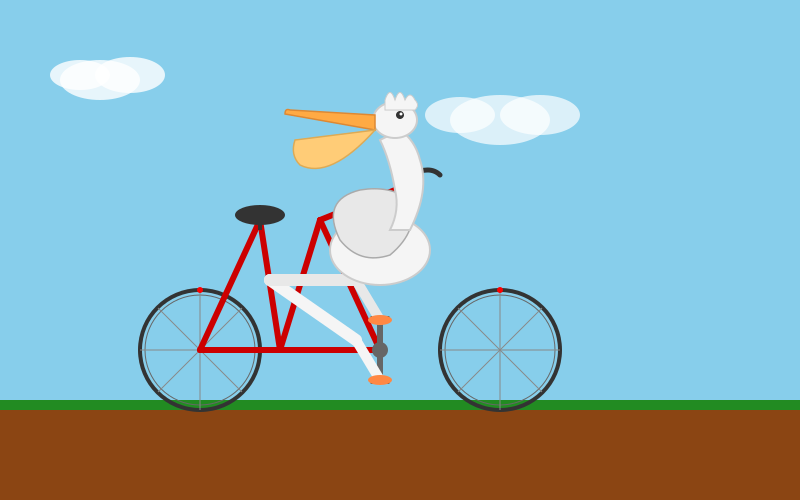
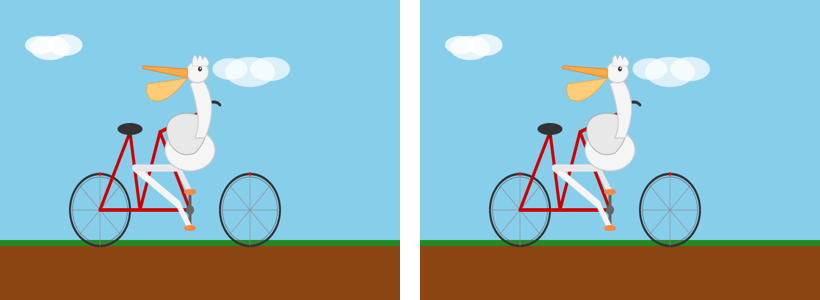

frame_t0.png · 33.9 KB

frame_t2.png · 33.9 KB

contact_sheet.png · 25.8 KB

6 个 agent：katie / ada / alexander / warren / minnie / harriet · $3.90 / 上限 $15 · 465 次调用 · 6.49M tokens
看板 6 片 = 5 交付 / 1 认领（做脚踏与腿的耦合循环 还在 ada 手上）
| 文件 | 大小 | animate | 分组 | 谁在做 |
|---|---|---|---|---|
| bicycle_pelican_pedal.svg | 8.9 KB | 20 | 10 | warren / ada（脚踏+腿） |
| bicycle_pelican_animated.svg | 7.1 KB | 4 | 12 | 集成版 |
| bicycle_pelican_full.svg | 6.7 KB | 4 | 10 | alexander（拼装集成+背景视差） |
| bicycle_pelican.svg | 2.7 KB | 1 | 5 | 最早的骨架版 |


minnie 的交付证据：t=0 与 t=2 两帧逐像素差值 = 0，contact sheet 已生成。